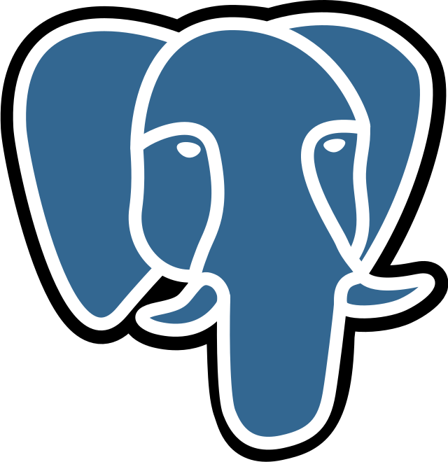
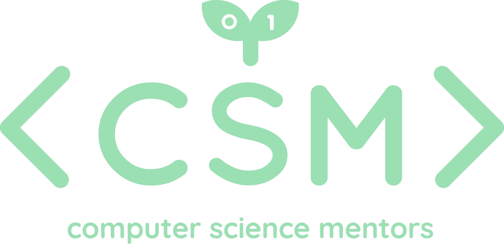
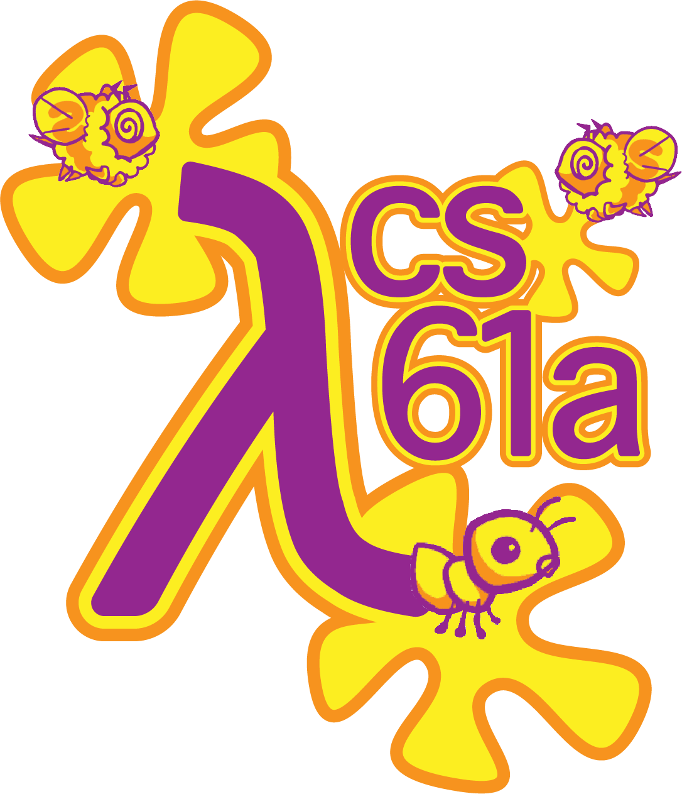
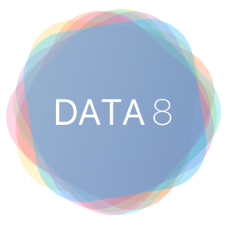
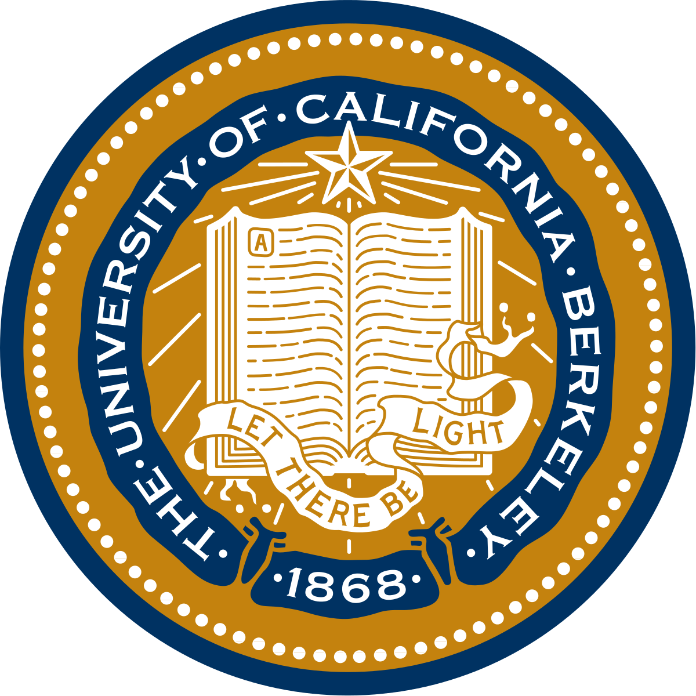
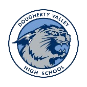

Hi again 🤠, I'm Christy Quang
Pronouns: she/her
I was born and raised in the Bay Area where I'm currently a third year studying Computer Science and Data Science @ UC Berkeley,
graduating in May 2025. As someone who wasn't intending on majoring in CS heading into college, I'm still searching for the "niche" field that excites me
and am experimenting in a variety of fields since I enjoy learning. As such, I'm interested in software & game development, human-centered interaction/design, computer graphics,
robotics, and data science where I plan on obtaining my master's degree in CS specializing in one of those fields post-undergrad.
In my free time, I love playing sports (anything but running), watching basketball (Warriors!), playing video games, baking/cooking, and reading.
I used to run a piano studio so I enjoy playing the piano and violin and aim to learn how to play fingerstyle guitar as well. I've always admired people who could speak
multiple languages conversationally so post-grad, I plan on learning Korean and Vietnamese since I consume a lot of korean media and want to get more in touch with my heritage.

About Me
🏫 christy.education
UC Berkeley, class of 2025
💻 christy.majors
B.A. computer science & data science (business/industrial analytics)
📜 christy.certificates
berkeley certificate in design innovation, SCET certificate in entrepreneurship & technology
🌎 christy.languages
[english, cantonese, mandarin]
🤔 christy.interests
software and game development, human-centered interaction/design, data analytics, sports (basketball), video games, cooking/baking, music
 Git
Git
 Java
Java
 Python
Python

PostgreSQL HTML5
HTML5
 CSS3
CSS3
 Javascript
Javascript
 iOS
iOS
 AWS Certified Cloud Practitioner
AWS Certified Cloud Practitioner
 AWS Certified Solutions Architect—Associate
AWS Certified Solutions Architect—Associate
Work Experience
Cloud Engineer Intern
May 2023 - August 2023
Amazon Web Services (AWS)
• Full-stack development of the administrative portal for Project Triton, a future internal tool for AWS Enterprise Skills Team utilized towards building tailored plans for customers
• Prototyped wireframe and utilized AWS CDK, API Gateway, Lambda, DynamoDB and ReactJS to build functionality to manage catalog items and collections, significantly automating efficiency
• Obtained AWS Solutions Architect and Cloud Practitioner certifications with no prior experience in cloud
Python | JavaScript | React.JS | DynamoDB | API Gateway | Amplify

Undergraduate Course Staff 1 (Tutor) for CS88
August 2023 - Present
University of California, Berkeley
• Undergraduate course staff member holding weekly office hours (4+ hrs), leading exam prep sections and writing exam questions to support students taking CS88: Computational Structures in Data Science
• Teach weekly exam preparation sections going over the previous week’s content to assist students on exams, top 3 contributor on Ed (https://edstem.org), an online forum used by students and staff to ask and answer questions
• Taught topics including Python loops, higher order functions, lists, dictionaries, recursion, trees, linked lists, OOP, efficiency, etc
Python | SQL
External Vice President
January 2023 - Present
Association of Women in EE&CS @ UC Berkeley
• Lead the officer team while acting as AWE's representative to the EECS department in regards to working with faculty, company representatives and clubs to create partnerships, furthering supporting the communities
• Past: Industrial Relations officer, Professional Development & Technical committee member

Senior Mentor for CS88
August 2022 - Present
Computer Science Mentors
• Teaching weekly sections to support students taking CS88: Computational Structures in Data Science
• Topics include Python loops, higher order functions, lists, dictionaries, recursion, trees, linked lists, OOP, efficiency, etc
• Lead 4-5 junior mentors by providing targeted, specific feedback while building a supportive and collaborative environment between students and mentors
Python | Scheme | SQL

CS61A Academic Intern
August 2022 - Dec 2022
University of California, Berkeley
• Provided 30+ students with personalized guidance and academic support for weekly lab sections in the first and largest undergraduate lower division CS course: CS61A (The Structure and Interpretation of Computer Programs)
• Taught topics including object-oriented programming, higher order function, environment diagrams, time complexity, recursion, trees, tree recursion, iterators & generators, inheritance, efficiency, scheme, SQL
Python | Scheme | SQL

CS61B(L) Academic Intern
June 2022 - Aug 2022
University of California, Berkeley
• Provided 30+ students with personalized guidance and academic support for daily lab sections in CS61BL (Data Structures and Algorithms)
• Taught topics including object-oriented programming, data structures, version control, time complexity, graph traversal, and sorting algorithms
Java

Data 8 Academic Intern
January 2022 - June 2022
University of California, Berkeley
• Provided 40+ students with personalized guidance and academic support for weekly lab sections in Data 8 (Foundations of Data Science)
• Taught topics including table manipulation and creations, conditionals, sampling, A/B Testing, linear regression, least squares, classifiers, etc.
Python | NumPy | Jupyter Notebook
EDUCATION

University of California, Berkeley
August 2021 - Present
B.A. Computer Science, Data Science (Business/Industrial Analytics)
- Activities: Undergraduate Course Staff, Association of Women in EE&CS (AWE), Computer Science Mentors (CSM), DataGood, Data Science Society
- Relevant Coursework:
- CS 188: Introduction to Artificial Intelligence
- CS 169A: Introduction to Software Engineering
- CS 70: Discrete Mathematics & Probability Theory
- CS 61C: Machine Structures (C Programming Language)
- CS 61B: Data Structures (Java)
- CS 61A: Structure and Interpretation of Computer Programs (Python)
- DATA 101: Data Engineering
- DATA 144: Data Mining & Analytics
- DATA C140: Probability for Data Science
- DATA C100: Principles & Techniques of Data Science
- MECENG 110: Introduction to Product Development
- DESINV 25: User Experience Design
- DESINV 22: Prototyping & Fabrication
- Spring 2024: CS 184: Foundations of Computer Graphics, CS 161: Computer Security, ENGIN 183C: Designing Startups to Transform Society
Diablo Valley College
May 2020 - Aug 2021
N/A (dual enrollment with high school)
- Relevant Coursework:
- COMSC-260: Assembly Language Programming/Computer Organization (Summer 2021)
- MATH-193: Analytic Geometry and Calculus II (Summer 2021)
- MATH-142: Elementary Statistics with Probability (Summer 2020)
- COMSC-255: Programming With Java (Summer 2020)
- COMSC-140: Python Programming (Summer 2020)

Dougherty Valley High School
August 2017 - June 2021
- Relevant Coursework:
- AP Computer Science A
- AP Calculus BC
- AP Calculus AB
- AP Physics C: Mechanics
- Activities: Key Club, Chamber Orchestra, National Honor Society, California Scholarship Federation, UNICEF, Red Cross, Tri-Valley Youth Music Ensemble